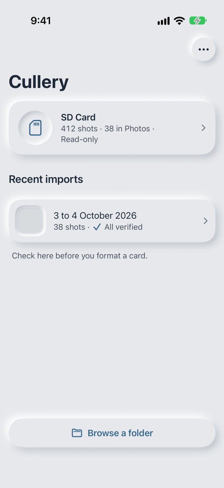
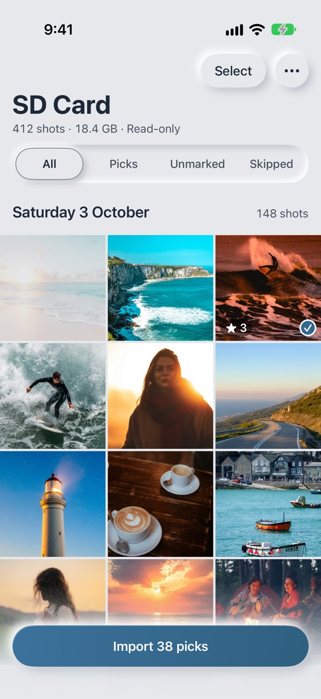
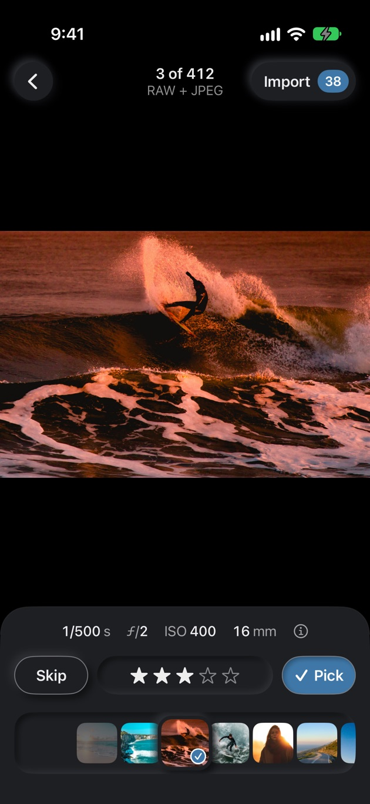
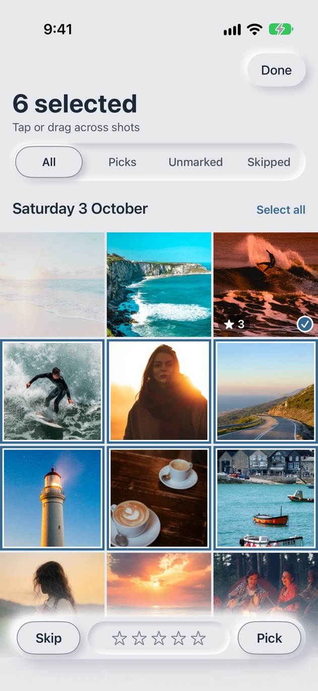
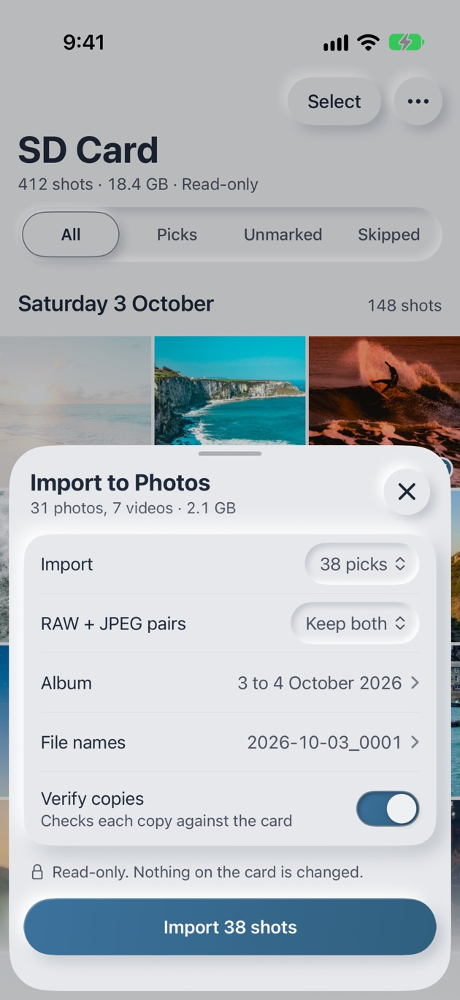
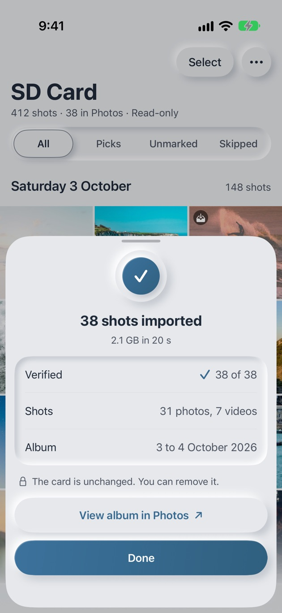
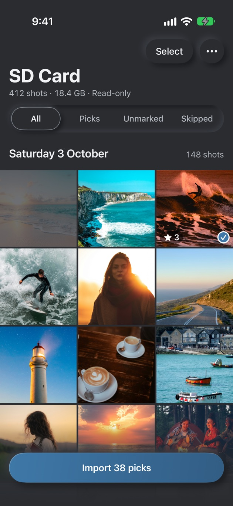

01
Plug in the card
Push a card reader into your iPhone. Cullery sees the card straight away and opens it with one tap. Once you have let it in, that card opens by itself every time.

Cullery for iPhone
Cullery is the step between your camera and your Photos library. Look at every frame properly on your iPhone, keep the good ones, and leave the rest on the card exactly as it was.
Download on the App StoreiOS 26 or later, and any SD card reader that works with your iPhone.
How it goes
A Saturday at the beach and a Sunday on the coast road. This is how 412 shots become one album of the good ones.
Push a card reader into your iPhone. Cullery sees the card straight away and opens it with one tap. Once you have let it in, that card opens by itself every time.

Every shot, sorted by the day you took it. A RAW and its JPEG show as one tile. Pinch from two across to six, or filter down to picks, unmarked or skipped.

Tap a shot and it fills the screen on true black, with shutter, aperture, ISO and focal length underneath. Double tap for 100% and check the eyes are sharp before you decide.

Swipe up to pick, down to skip. Shot a burst? Tap Select and drag across it to mark the whole run in one go.

Your picks go into Photos in a new album named after the days you shot, with file names you choose. Switch apps or lock your phone: the import keeps going and shows its progress on the Lock Screen.

When it finishes you see how many copies were verified. Recent imports keeps that tick for every card, so you know when it is time to format the card in your camera.

Marks
Three marks, kept in the app and never written to the card.
Stop halfway and carry on tomorrow: your marks are remembered against the card, and shots already in Photos are left out next time.
Verify copies
As a file comes off the card, Cullery works out its SHA-256 fingerprint: a 64-character code that changes completely if even one byte is different. Then it reads the copy back, and reads the card once more. Only when all three agree does the shot go into Photos.
If any of them differ, that shot stays out of Photos and Cullery tells you which one, so a tired card or a loose reader can't leave you with a damaged copy. Verify copies is on unless you turn it off.
Cullery only reads. Your picks, skips and stars live in the app, so the card comes out exactly as it went in. Formatting stays a job for your camera, when you decide it's time.
Formats
RAW files iOS can read, including Sony ARW, Canon CR3 and CR2, Nikon NEF, Fujifilm RAF, OM System and Olympus ORF, Panasonic RW2, DNG, Pentax PEF, Samsung SRW, Hasselblad 3FR and Phase One IIQ, plus JPEG, HEIF, and MP4 and MOV video.
A RAW and JPEG pair counts as one shot: import both, RAW only or JPEG only. Files Photos can't take, like AVCHD or BRAW, are listed on screen so you don't format them away by accident.
Appearance
Cullery follows your iPhone's appearance. Its controls are raised from one soft surface, and full-screen review always sits on true black, so colour is judged against a neutral surround.

Drag to compare light and dark
Your shots go from the card to your Photos library and nowhere else. Nobody, including us, can see them. Read the privacy policy.
Made in Sydney by Michael Lameri, a video editor and iOS developer who wanted a better way to cull a shoot on the go.
Download on the App Store